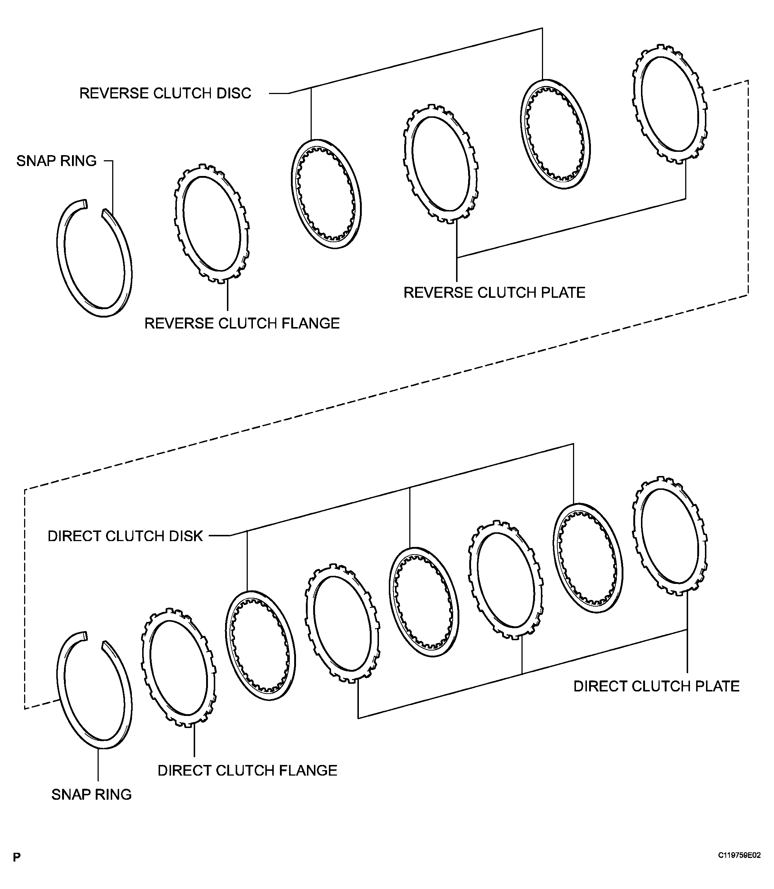
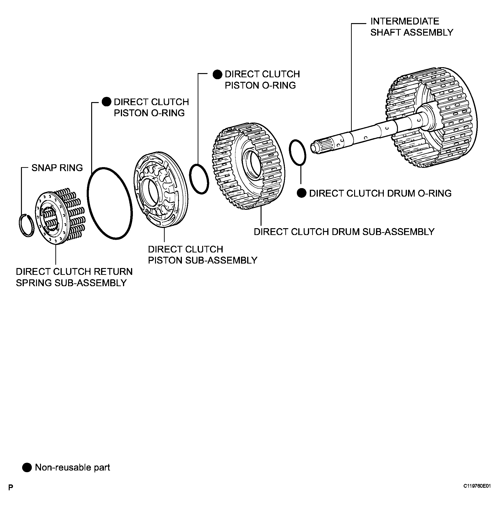

Intermediate Shaft: Components
WARNING:
This page is about a different variant/trim than selected.
Fig 1: Identifying Clutch Disc Components (1 Of 2)

Courtesy of © TOYOTA, LICENSE AGREEMENT TMS1002
Fig 2: Identifying Clutch Disc Components (2 Of 2)

Courtesy of © TOYOTA, LICENSE AGREEMENT TMS1002